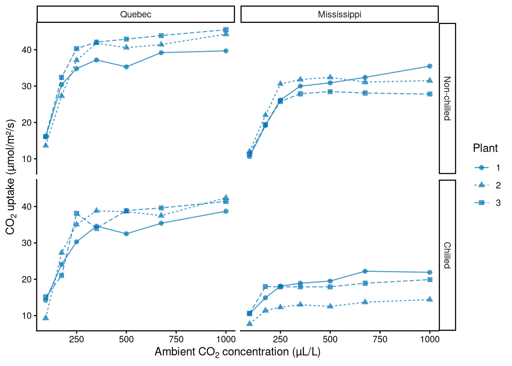
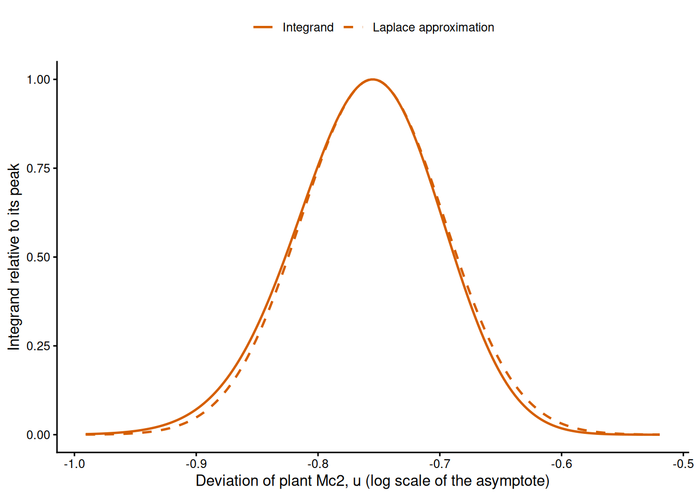
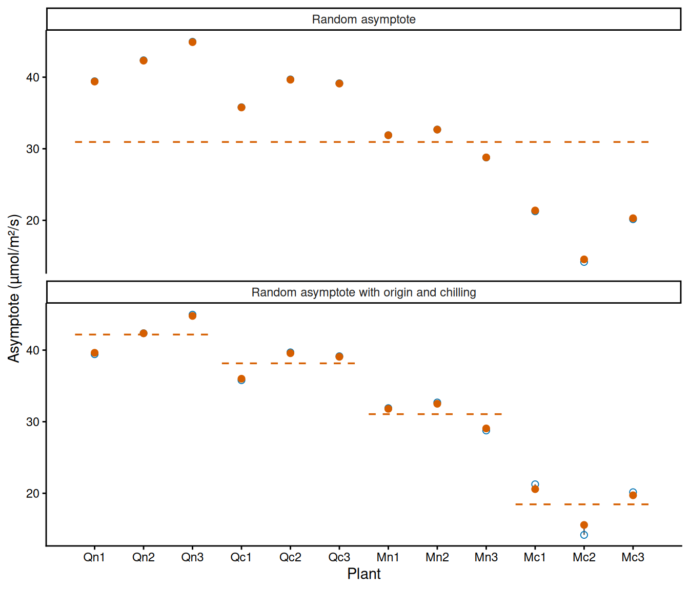
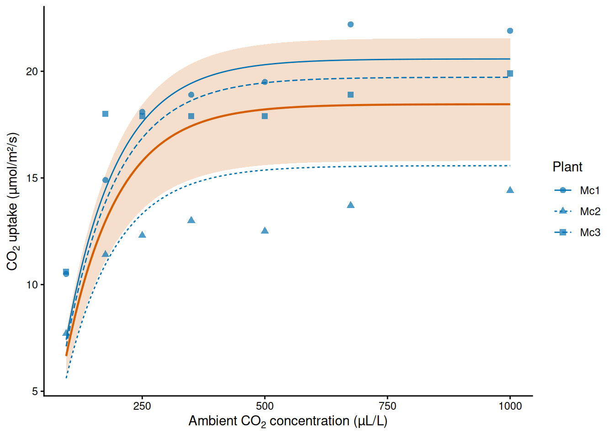
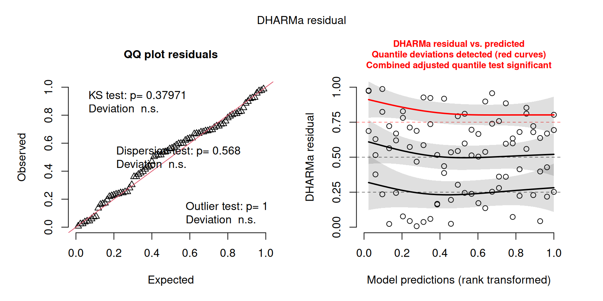

In this chapter, we learn how to fit response curves to observations that come in groups. Repeated measurements on the same plants, animals, nests or sites share the conditions of their group, so they are not independent of each other. A grouped model describes three things together: a curve that is common to all the groups, how that curve varies among groups, and how the observations vary around the curve of their own group. The variation among groups is described by a probability distribution, and the model is fitted by maximum likelihood once the deviations of the groups have been integrated out of the likelihood.
What is new in this chapter is the conditional distribution, which describes the two levels of such a model, and the marginal distribution that follows from it; random effects and partial pooling, with which a grouped model shares information among groups; maximum marginal likelihood and the Laplace approximation, with which the model is fitted; variance components and shrinkage; restricted maximum likelihood (REML), which reduces the bias of the estimated variances; the curves of observed and of new groups; and how grouped models are checked and compared. One example runs through the chapter, the uptake of carbon dioxide (CO₂) by 12 plants of a grass, each measured at seven concentrations of CO₂ (Potvin et al. 1990).1 The curve is the saturating exponential and the observations follow a Normal distribution. RTMB integrates the deviations of the groups out of the likelihood when we give MakeADFun() the argument random. Chapter 6 treated every observation as independent; Chapter 8 deals with the difficulties of finding the maximum of a likelihood.
2 Learning goals
In this chapter, we will cover:
observations in groups;
conditional and marginal distributions;
fixed and random effects;
complete, no and partial pooling;
the marginal likelihood and the Laplace approximation;
random effects in RTMB;
variance components and predicted group effects;
group-level predictors and shrinkage;
the uncertainty of variance components and REML;
curves for observed and new groups;
checking a grouped model;
comparing grouped models with AIC and leave-one-group-out cross-validation.
We will use the Normal entry of the distribution supplement and the saturating exponential entry of the function supplement.
The table below is a roadmap of the chapter. Each row is one step, with the question that it answers and the R tools that we use for it.
Roadmap of the chapter.
Step
Question it answers
In R
The groups
Which observations share the conditions of a group?
an integer index of the group of each observation
The model
How does the curve vary among groups, and how do the observations vary around it?
the deviations of the groups as a vector in the list of parameters
Pooling
Should the groups share one curve, have curves of their own, or something in between?
one NLL for each choice
The fit
Which parameter values make the observations most probable, once the deviations of the groups are integrated out?
MakeADFun() with random, optim(), sdreport()
Predictors
Do properties of the groups explain part of the variation among them?
fixed effects on the parameter that varies, ADREPORT()
Uncertainty and REML
How precisely are the variances estimated, and how biased are they?
TMB::tmbprofile(), random with the fixed effects
New groups
Which curves do we expect for groups that were not measured?
the distribution of the group deviations, qnorm()
Checking
Does the fitted model describe the observations and the groups?
Which of the candidate models do the data support?
AIC, map in MakeADFun(), a for loop that leaves out one group at a time
3 Observations in groups
The observational unit is the entity on which one observation is made, such as a quadrat, a visit to a nest or a measurement on a plant. In Chapters 4 and 6 the observations were independent. Often, however, observations come in groups (also called grouping units): several observations are made on the same individual, at the same site, in the same nest or in the same tank. The observations of one group share conditions that other groups do not share (the genotype and condition of an individual, the microhabitat of a site, the parents of a brood, the observer of a survey), so they tend to resemble each other more than observations of different groups do. The variation among groups is part of the process variation of Chapter 1: it would remain with perfect measurements.
Treating grouped observations as independent overstates the information in the data. Another observation of a group that we have already observed tells us less than an observation of a new group, because part of what it shows is the condition of its group, which we already know something about. A model that treats every observation as independent therefore calculates standard errors that are too small and intervals that are too narrow, and the evidence for an effect looks stronger than it is. The practical of Chapter 4 met this problem with tadpoles that share a tank, and Chapter 6 used the number of tanks and not the number of tadpoles as the number of observations in AICc and BIC for the same reason. A grouped model describes the dependence explicitly: each group has a curve of its own, and a distribution describes how the curves vary among groups.
The data of this chapter come from an experiment on the cold tolerance of the grass Echinochloa crus-galli. Six plants came from Quebec and six from Mississippi, and three plants of each origin were chilled overnight before the measurements. The CO₂ uptake of every plant (µmol/m²/s) was measured at the same seven ambient concentrations of CO₂, from 95 to 1000 µL/L,2 so the design has 2 origins × 2 treatments × 3 plants × 7 concentrations, 84 measurements in total. The observational unit is one measurement and the group is the plant.
The uptake rises with the concentration and levels off (Figure 1). We describe it with the saturating exponential shifted along \(x\) (see “Shifting and scaling” in Chapter 5):
\[
\mu(x)=a\left(1-e^{-b(x-c)}\right),
\]
where \(\mu(x)\) is the expected uptake (µmol/m²/s) at the concentration \(x\) (µL/L), \(a\) is the asymptote (µmol/m²/s), \(b\) is the rate at which the curve approaches it (L/µL), and \(c\) is the concentration at which the expected uptake is zero (µL/L). The curve reaches 63% of its asymptote at \(x=c+1/b\) (see the supplement entry). The measurements start at 95 µL/L, so we use the curve above \(c\) only. The asymptote is the uptake of a plant at high concentrations of CO₂, a measure of its capacity for photosynthesis, and it is the property in which the plants of Figure 1 differ most visibly, so it is the parameter that we will let vary among plants.
The data set CO2 is stored as a special kind of data frame for grouped data, which we turn into an ordinary data frame with as.data.frame(). Its column Plant names the plant of each measurement: the first letter is the origin (Q or M), the second the treatment (n for non-chilled, c for chilled), and the number distinguishes the three plants of each combination. Plant is an ordered factor whose levels are not in the order of the rows, so we build the integer index of the plants ourselves, with match(), numbering the plants in the order in which they first appear. Plants 1 to 3 are then the non-chilled plants from Quebec, 4 to 6 the chilled ones, 7 to 9 the non-chilled plants from Mississippi and 10 to 12 the chilled ones. The list of data holds the concentration, the uptake and the index of the plant of each measurement:
# Load RTMB first and RTMBdist second.library(RTMB)library(RTMBdist)# CO2 uptake of 12 plants at seven concentrations (see ?CO2), as an ordinary data frame.co2 =as.data.frame(CO2)# Names of the plants in the order of the rows, and the index (1 to 12) of the plant of# each measurement.plant_names =unique(as.character(co2$Plant))plant =match(as.character(co2$Plant), plant_names)plant_names
# List of data: the predictor, the response and the plant of each measurement.co2_data =list(conc = co2$conc, uptake = co2$uptake, plant = plant)

Figure 1: CO₂ uptake of 12 plants of Echinochloa crus-galli against the ambient concentration of CO₂, in four panels for the two origins and the two treatments. Lines join the measurements of the same plant; the line type and symbol distinguish the three plants of each panel.
4 Conditional and marginal distributions
Chapter 2 introduced the joint distribution of two random variables, the marginal distribution of each of them and independence. The conditional distribution of \(X_1\) for a given value \(x_2\) of \(X_2\) gives the probabilities of the values of \(X_1\) among the outcomes in which \(X_2=x_2\):
where the numerator is the joint probability and the denominator the marginal probability of the given value, which must be larger than zero. The bar reads “for a given value of”, as in the likelihood notation of Chapter 4; what is given now is the value of another random variable. In the table of the two seeds of Chapter 2, with \(P(X_1=1)=0.6\) and \(P(X_2=1)=0.3\), the probability that the first seed does not germinate, for a given failure of the second, is
\[
P(X_1=0\mid X_2=0)=\frac{0.28}{0.70}=0.4,
\]
which equals the marginal probability \(P(X_1=0)=0.4\). This is what independence means: the conditional distribution of \(X_1\) is the same for every value of \(X_2\), and equal to the marginal distribution, so knowing \(X_2\) does not change the probabilities of \(X_1\). When the two variables are not independent, the conditional distribution changes with the given value (Practice 1).
Multiplying both sides of the definition by \(P(X_2=x_2)\) writes the joint distribution as a conditional distribution times a marginal one,
and adding these joint probabilities over all the values of \(X_2\) gives the marginal distribution of \(X_1\), as in the tables of Chapter 2. For continuous random variables the same relations hold with densities in place of probabilities and an integral in place of the sum (Chapter 2):
where \(f_{X\mid Y}(x\mid y)\) is the conditional density of \(X\) for a given value \(y\) of \(Y\). In plain English, the marginal density of \(X\) is the average of its conditional densities over all the values of \(Y\), each weighted by the density of that value. This is the form in which a grouped model is written: first the distribution of the value of a group, then the distribution of the observations for a given value; the marginal distribution of the observations follows by integration.
We have met a marginal distribution of this kind before. The Beta-Binomial distribution of Chapter 6 is the marginal distribution of a count that is Binomial for a given probability, when the probability varies among sampling units according to a Beta distribution: each reed frog tank had its own probability that a tadpole was killed, and the Beta-Binomial distribution describes the counts with those probabilities integrated out. For this combination of distributions the integral has a closed form, which is why we could write its probability mass directly. A random effect is the same idea with a Normal distribution for the value of each group, usually on a transformed scale (the logarithm of a positive parameter or the logit of a probability). For most such models the integral has no closed form, and we need the approximation of Section 6.
In general, let \(Y_{ij}\) be the \(i\)-th observation of group \(j\) and \(u_j\) the deviation of group \(j\) from the common curve. For the CO₂ data the model is
where \(j=1,\ldots,12\) are the plants and \(i=1,\ldots,7\) the measurements of a plant, \(x_{ij}\) is the concentration of measurement \(i\) of plant \(j\), \(u_j\) is the deviation of plant \(j\) on the log scale of the asymptote, \(\sigma^2_{\mathrm{plant}}\) is the variance of these deviations among plants, \(\mu_j(x)\) is the curve of plant \(j\), and \(\sigma^2_{\mathrm{obs}}\) is the variance of the measurements around the curve of their plant. The asymptote of plant \(j\) is \(a_j=a\,e^{u_j}\), that is, \(\log(a_j)=\log(a)+u_j\), so every asymptote is positive and the deviations act by multiplication: a plant with \(u_j=0.1\) has an asymptote about 10% above \(a\) (because \(e^{0.1}\approx1.105\)). The rate \(b\) and the location \(c\) are shared by all plants.
The model has two levels. For a given value of \(u_j\), the seven measurements of plant \(j\) are independent: each varies around the curve of its plant with variance \(\sigma^2_{\mathrm{obs}}\). Marginally, that is, without knowing \(u_j\), they are not independent, because they share \(u_j\): a measurement above the common curve makes it more probable that the plant has a high asymptote, and so that its other measurements are also above the common curve. This is the dependence of grouped observations described in Section 3, now written as a model. Measurements of different plants are independent, because the deviations of different plants are independent.
The parameters that are shared by all the groups (\(a\), \(b\) and \(c\) here, and the effects of the predictors that we add in Section 7) are called fixed effects. The deviations \(u_j\), which are described by a distribution, are the random effects, and a model with both is a mixed-effects model (or mixed model). Because it describes the data in levels, it is also called a hierarchical or multilevel model. “Random” says that the deviations are described by a distribution; it does not mean that the plants were allocated at random, nor that their differences have no cause.
Practice 1: two seedlings in one quadrat
The quadrats of a forest floor are either favourable or unfavourable for seedlings, each with probability 0.5. In a favourable quadrat a seedling survives its first year with probability 0.8, in an unfavourable one with probability 0.2, independently of the other seedlings of the quadrat. Two seedlings are planted in a quadrat whose quality was not recorded, and \(X_1\) and \(X_2\) are 1 if the first or the second seedling survives and 0 otherwise. Calculate the joint distribution of \(X_1\) and \(X_2\), the marginal probability \(P(X_1=1)\) and the conditional probability \(P(X_1=1\mid X_2=1)\). Are the two seedlings independent? Are they independent for a given quality of the quadrat?
TipSolution
For a given quality the seedlings are independent, so their joint probability is the product of their probabilities. The quality was not recorded, so we add these products over the two qualities, each weighted by its probability; this is the discrete version of the integral of the marginal density. For example,
In the same way, \(P(X_1=1,X_2=0)=P(X_1=0,X_2=1)=0.08+0.08=0.16\) and \(P(X_1=0,X_2=0)=0.02+0.32=0.34\), which add up to one with the other two. Then \(P(X_1=1)=0.34+0.16=0.5\), and, because \(P(X_2=1)=0.5\) as well, \(P(X_1=1\mid X_2=1)=0.34/0.5=0.68\). In R:
# Probability of each quality (favourable, unfavourable) and of survival in each.p_quality =c(0.5, 0.5)p_survive =c(0.8, 0.2)# Joint probability that both survive: the product for a given quality, added over the# qualities. Then the marginal probability that the second survives.p_both =sum(p_quality * p_survive * p_survive)p_second =sum(p_quality * p_survive)# Conditional probability that the first survives, for a given survival of the second.p_both / p_second
[1] 0.68
The seedlings are not independent: the survival of one of them makes it more probable that the quadrat is favourable, and so that the other one survives too (0.68 against 0.5). For a given quality of the quadrat they are independent, by construction. This is the structure of a grouped model: independence for a given value of the group effect, and dependence when the group effect is integrated out.
5 Three ways to share information
When a parameter of a curve may differ among groups, a model can treat it in three ways. With complete pooling, all the groups share one value of the parameter: the groups are ignored and the observations are treated as independent, as in Chapter 6. With no pooling, each group has its own value, an ordinary parameter estimated from the observations of that group, and nothing connects the values of different groups. With partial pooling, the values of the groups are drawn from a distribution whose variance is estimated, as in the model of Section 4: each group has its own value, the values of all the groups inform the distribution, and the distribution in turn informs the value of each group.
The three ways differ in what they assume and in the question that they answer. Complete pooling assumes that the groups do not differ. When they do, the observation variance absorbs the variation among groups, and the standard errors are too small because every observation is treated as independent. No pooling describes the measured groups, and only them: it says how each of these groups responds, but nothing about a group that was not measured, because it does not describe how groups vary. Partial pooling describes the measured groups and, through the distribution of the group values, groups in general, which is usually the question of an ecological study (plants of this species, nests of this bird, sites of this habitat). Its costs are an assumption about the shape of that distribution, which is Normal in this chapter, and an integral in the likelihood (Section 6).
For the CO₂ data, complete pooling fits one curve to all 84 measurements. The NLL is that of a Normal model with a response curve, as in Chapter 6. The asymptote, the rate and the standard deviation are positive, so the optimiser works with their logarithms, log_asym, log_rate and log_sd_obs; the location c0 can take any value and is not transformed:
# Negative log-likelihood with one curve for all the plants (complete pooling).pooled_nll =function(parms, data) {getAll(parms, data) a =exp(log_asym) b =exp(log_rate) sd_obs =exp(log_sd_obs)# Expected uptake at the concentration of each measurement. mu = a * (1-exp(-b * (conc - c0)))-sum(dnorm(x = uptake, mean = mu, sd = sd_obs, log =TRUE))}
We read starting values from Figure 1: an asymptote of 30 µmol/m²/s, zero uptake at about 50 µL/L, 63% of the asymptote reached about 100 µL/L higher (so \(b=1/100\) L/µL), and a standard deviation of 2 µmol/m²/s:
# Connect a likelihood to a data set.cmb =function(f, d) function(p) f(p, d)# Process the NLL, starting from the values read from the figure, and fit it.pooled_obj =MakeADFun(cmb(pooled_nll, co2_data),list(log_asym =log(30), log_rate =log(0.01), c0 =50, log_sd_obs =log(2)),silent =TRUE)pooled_fit =optim(par = pooled_obj$par,fn = pooled_obj$fn,gr = pooled_obj$gr,method ="BFGS")pooled_fit$convergence
[1] 0
Without pooling, each plant has its own asymptote. The parameter log_asym becomes a vector with one log asymptote per plant, and a[plant] selects the asymptote of the plant of each measurement, as the asymptote of each state in the practical of Chapter 6. The rate, the location and the standard deviation are still shared:
# Negative log-likelihood with one asymptote for each plant (no pooling).separate_nll =function(parms, data) {getAll(parms, data) a =exp(log_asym) b =exp(log_rate) sd_obs =exp(log_sd_obs)# a[plant] is the asymptote of the plant of each measurement. mu = a[plant] * (1-exp(-b * (conc - c0)))-sum(dnorm(x = uptake, mean = mu, sd = sd_obs, log =TRUE))}# Process the NLL, with the same starting asymptote for every plant, and fit it.separate_obj =MakeADFun(cmb(separate_nll, co2_data),list(log_asym =rep(log(30), 12), log_rate =log(0.01), c0 =50, log_sd_obs =log(2)),silent =TRUE)separate_fit =optim(par = separate_obj$par,fn = separate_obj$fn,gr = separate_obj$gr,method ="BFGS")separate_fit$convergence
[1] 0
Both fits converged. We compare the standard deviation of the measurements around the curves, and list the asymptotes of the plants without pooling:
# Standard deviation of the measurements around the curve(s) (µmol/m²/s).c(pooled =exp(pooled_fit$par[["log_sd_obs"]]),separate =exp(separate_fit$par[["log_sd_obs"]]))
pooled separate
8.231097 1.862618
# Asymptotes of the 12 plants without pooling (µmol/m²/s).separate_asym =exp(separate_fit$par[names(separate_fit$par) =="log_asym"])names(separate_asym) = plant_namesround(separate_asym, 1)
Around one common curve the measurements vary with a standard deviation of 8.2 µmol/m²/s, and around the curves of their own plants with a standard deviation of 1.9 µmol/m²/s. So most of the scatter around the common curve is variation among plants, which complete pooling counts as variation of the measurements. The asymptotes range from 14.2 µmol/m²/s (Mc2) to 45.0 µmol/m²/s (Qn3), and the three chilled plants from Mississippi have the lowest ones. No pooling describes these 12 plants, but it cannot say how much plants of this grass vary in their capacity for uptake, or which curve to expect for a plant that was not measured. For that we need partial pooling.
6 Maximum marginal likelihood
6.1 The marginal likelihood
In a mixed model the random effects are not observed. The likelihood of the parameters \(\boldsymbol\theta\), which are the fixed effects and the variances of the model, is therefore the probability of the observations with the random effects integrated out, that is, their marginal distribution (Section 4). For group \(j\), with its observations collected in the vector \(\mathbf y_j\), this is
where \(f(\mathbf y_j\mid u,\boldsymbol\theta)\) is the joint density of the observations of group \(j\) for a given value \(u\) of its random effect (the product of the densities of its observations, which are independent for a given \(u\)), and \(f(u\mid\sigma_{\mathrm{group}})\) is the Normal density of the random effect, with mean zero and standard deviation \(\sigma_{\mathrm{group}}\). The groups are independent, so the likelihood is the product of the \(L_j\) over the groups, and the log-likelihood is the sum of their logarithms. This is the marginal likelihood, and its maximisation is called maximum marginal likelihood. In plain English, the marginal likelihood of a group averages the likelihood of its observations over all the values that its random effect could take, each weighted by its density under the distribution of group effects. For the CO₂ data, \(\boldsymbol\theta\) holds \(a\), \(b\), \(c\), \(\sigma_{\mathrm{plant}}\) and \(\sigma_{\mathrm{obs}}\), and the integral of each plant runs over its deviation \(u_j\).
Why not estimate the deviations as parameters? That is no pooling: the \(u_j\) would be ordinary parameters, and no distribution would connect them. In the marginal likelihood the 12 deviations are replaced by one parameter, \(\sigma_{\mathrm{plant}}\), which describes how plants vary. The number of parameters then stays the same however many groups are observed, which is one of the conditions under which the large-sample properties of maximum likelihood of Chapter 4 hold.
6.2 The Laplace approximation
The integral of the marginal likelihood has a closed form only in special cases, such as the Beta-Binomial distribution and the Normal linear mixed model, so in general it must be approximated. The Laplace approximation uses the shape of the integrand. As a function of \(u\), the integrand is the likelihood of the observations of the group multiplied by the density of \(u\). It has a peak at the value of \(u\) that is most probable for these observations, and near the peak its logarithm is close to a parabola, so the integrand itself is close to a Normal-shaped curve. The area under a Normal-shaped curve is known: it depends only on the height of the peak and on the curvature of the logarithm at the peak. So the approximation finds the peak, measures its height and its curvature, and replaces the integral by the area under the Normal-shaped curve with the same peak and curvature. This is the quadratic approximation of the log-likelihood that gave the standard errors of Chapter 4, applied to the integrand.
Figure 2 shows the integrand for plant Mc2, with the parameters at the estimates of the model that we fit in Section 6.3, together with its Laplace approximation.

Figure 2: The integrand of the marginal likelihood of plant Mc2 as a function of its deviation u, under the model with a random asymptote and the parameters at their estimates: the joint density of the seven measurements of the plant for a given u, multiplied by the density of u, relative to its value at the peak (solid line). The dashed line is the Normal-shaped curve of the Laplace approximation, with the same peak and the same curvature of its logarithm at the peak.
The two curves almost coincide; the integrand has a slightly longer tail towards low values of \(u\), which the symmetric approximation cannot follow. The area under the approximation is 0.3% smaller than the area under the integrand, which changes the log-likelihood of the plant by 0.003. The approximation is accurate when the integrand is close to a Normal-shaped curve: when each group has many observations, so that the likelihood of the group dominates the integrand, and when the observations are Normal, or close to Normal, for a given value of the random effect. For the Normal linear mixed models of the glmmTMB supplement it is exact, because there the logarithm of the integrand is a parabola. It is less accurate when the groups have few observations, and when the observations are counts near zero or binary outcomes, for which the integrand can be skewed.
CautionStatistical detail: the Laplace approximation
Let \(h(u)=\log\left(f(\mathbf y_j\mid u)\,f(u)\right)\) be the logarithm of the integrand of one group, as a function of its random effect \(u\), with its maximum at \(\hat u\). Close to \(\hat u\), \(h\) is replaced by a parabola. The first derivative of \(h\) is zero at a maximum, so
where \(-h''(\hat u)\) is the curvature of \(h\) at its maximum, and the last integral is the area under a Normal-shaped curve with variance \(1/(-h''(\hat u))\), which is the constant that is missing from a Normal density with that variance. In plain English, the integral is replaced by the height of the peak times its width.
When the random effects form a vector \(\mathbf u\) with \(q\) elements, the curvature becomes the Hessian matrix \(\mathbf H\) of \(-h\) at its maximum (see the box on the Hessian in Chapter 4), and \(\sqrt{2\pi/(-h''(\hat u))}\) becomes \((2\pi)^{q/2}/\sqrt{\det(\mathbf H)}\), where the determinant \(\det(\mathbf H)\) measures how sharply the integrand peaks in all directions together. When the groups are independent, the matrix has non-zero elements only in the blocks of the random effects of each group (only on its diagonal when each group has one random effect), and the approximation is the product of the approximations of the groups.
6.3 Random effects in RTMB
In RTMB we do not write the marginal likelihood ourselves. We write the joint NLL of the observations and the random effects, minus the logarithm of their joint density,
that is, minus the log density (or log probability) of the observations for given random effects plus minus the log density of the random effects (the joint density is the conditional density times the marginal one, Section 4). MakeADFun() then integrates the random effects out. Three things change compared with the NLLs of Chapters 4 and 6:
the random effects are an element of the list of parameters, a vector with one starting value for each group (usually zero);
the NLL adds minus the log density of the random effects to minus the log density (or log probability) of the observations, and the line with the density of the random effects comes before the line that uses them (we need this order to simulate from the model);
the argument random of MakeADFun() names the elements of the list of parameters that are random effects, here random = "u". RTMB then integrates them out with the Laplace approximation: the elements fn and gr of the object are the marginal NLL and its gradient, as functions of the other parameters only, and par holds only those other parameters.
So the fit with optim() works as before. For the CO₂ data the NLL is the no-pooling NLL with the vector log_asym replaced by one parameter log_asym plus the deviations u, and with the density of u, whose standard deviation \(\sigma_{\mathrm{plant}}\) is optimised as log_sd_plant:
# Joint negative log-likelihood with a random asymptote.mixed_nll =function(parms, data) {getAll(parms, data) sd_plant =exp(log_sd_plant)# Minus the log density of the deviations of the plants, before they are used. nll =-sum(dnorm(x = u, mean =0, sd = sd_plant, log =TRUE))# Asymptote of each plant, and minus the log density of the measurements for given u. a =exp(log_asym + u) b =exp(log_rate) sd_obs =exp(log_sd_obs) mu = a[plant] * (1-exp(-b * (conc - c0))) nll -sum(dnorm(x = uptake, mean = mu, sd = sd_obs, log =TRUE))}
The deviations start at zero, and \(\sigma_{\mathrm{plant}}\) at 0.1 (plants that differ by about 10%). We process the NLL with random = "u" and fit it:
# Process the joint NLL; random = "u" integrates the deviations out of the likelihood.mixed_obj =MakeADFun(cmb(mixed_nll, co2_data),list(log_asym =log(30), log_rate =log(0.01), c0 =50,log_sd_plant =log(0.1), log_sd_obs =log(2), u =rep(0, 12) ),random ="u",silent =TRUE)# Minimise the marginal NLL with BFGS: par holds only the five other parameters.mixed_fit =optim(par = mixed_obj$par,fn = mixed_obj$fn,gr = mixed_obj$gr,method ="BFGS")mixed_fit$convergence
The fit converged, and the estimates are those of the five parameters of \(\boldsymbol\theta\); the deviations of the plants are not among them, because they were integrated out.
CautionTechnical detail: what RTMB does with random effects
Each time the optimiser calls fn with values of \(\boldsymbol\theta\), RTMB first carries out an inner optimisation: it minimises the joint NLL over \(\mathbf u\) for these values, which gives the peak \(\hat{\mathbf u}\) of the integrand, with Newton’s method (an optimiser that uses second derivatives; see Chapter 8). Automatic differentiation (Chapter 6) supplies the first and second derivatives that Newton’s method needs, and the Hessian with respect to \(\mathbf u\) at the peak gives the determinant of the Laplace approximation. fn returns minus the logarithm of the approximation, and gr its gradient with respect to \(\boldsymbol\theta\), which requires derivatives of the inner optimum as well and is also obtained by automatic differentiation. So every evaluation of the marginal NLL contains a complete optimisation over the random effects, which is why a mixed model takes longer to fit than a model without random effects. The method is described by Kristensen et al. (2016).3
6.4 Variance components and predicted plant effects
The variances \(\sigma^2_{\mathrm{group}}\) and \(\sigma^2_{\mathrm{obs}}\) are the variance components of the model: \(\sigma^2_{\mathrm{group}}\) describes the variation among groups and \(\sigma^2_{\mathrm{obs}}\) the variation of the observations around the curve of their group. Each has the scale and the units of the quantity that it describes, and the NLL takes their square roots, the standard deviations. sdreport() works on the marginal NLL as on any other NLL, and two values of the argument select of summary() give the two kinds of output:
summary(sd, select = "fixed"): the estimates and standard errors of the parameters \(\boldsymbol\theta\) on the optimised scales;
summary(sd, select = "random"): the predicted group effects, one row for each group, with their standard errors.
The predicted effect of a group is the peak of its integrand, the most probable value of its random effect for the observations of the group and the estimates of \(\boldsymbol\theta\) (it is also called the conditional mode). The random effects are not parameters, so the predicted effects are not estimated by maximum likelihood: they are predictions of unobserved quantities. Their standard errors combine the uncertainty about the effect of a group for given parameter values with the uncertainty of the estimates of the parameters.
For the CO₂ data:
# Standard errors on the optimised scales.mixed_sd =sdreport(mixed_obj)summary(mixed_sd, select ="fixed")
# Estimates on the original scale.c(a =exp(mixed_fit$par[["log_asym"]]),b =exp(mixed_fit$par[["log_rate"]]),c = mixed_fit$par[["c0"]],sd_plant =exp(mixed_fit$par[["log_sd_plant"]]),sd_obs =exp(mixed_fit$par[["log_sd_obs"]]))
a b c sd_plant sd_obs
30.944493826 0.009587305 48.402668521 0.335095157 2.012329781
The measurements vary around the curve of their plant with a standard deviation \(\hat\sigma_{\mathrm{obs}}\approx2.0\) µmol/m²/s, close to the 1.9 µmol/m²/s without pooling and far from the 8.2 µmol/m²/s of complete pooling: the mixed model, like no pooling, separates the variation among plants from the variation of the measurements. \(\hat\sigma_{\mathrm{plant}}\approx0.34\) is a standard deviation on the log scale of the asymptote, so it has no units. For small values, a standard deviation on the log scale is approximately the coefficient of variation of the quantity on the original scale (its standard deviation divided by its mean); 0.34 is not very small, and it means that the asymptotes of plants vary around their median by roughly a third. The estimate \(\hat a\approx30.9\) µmol/m²/s is the asymptote of a plant with \(u_j=0\). Because \(u_j\) is symmetric around zero and the exponential is increasing, half of the plants have a higher asymptote and half a lower one, so \(\hat a\) is the median asymptote of plants in general. It is not their mean, which is larger, because the exponential is not a straight line (see the box on Jensen’s inequality in Chapter 4).
The predicted plant effects:
# Predicted plant effects (log scale of the asymptote) and their standard errors.mixed_effects =summary(mixed_sd, select ="random")rownames(mixed_effects) = plant_namesround(mixed_effects, 3)
The Quebec plants have positive effects, and the chilled plants from Mississippi (Mc1, Mc2 and Mc3) the most negative ones: their asymptotes are about 31%, 53% and 34% below the median (\(e^{-0.370}\approx0.69\), \(e^{-0.755}\approx0.47\) and \(e^{-0.422}\approx0.66\)). So much of the variation among plants follows their origin and treatment, which the model does not know about yet.
7 Group-level predictors and shrinkage
A group-level predictor is measured on the group and not on each observation: the origin of a plant, the treatment that it received, the habitat of a site. All the observations of a group share its value. In a mixed model it enters as a fixed effect on the parameter that varies among groups, where it explains part of the variation among groups. The random effects then describe the variation that remains among groups with the same values of the predictors, and the variance among groups becomes smaller.
The plants have two group-level predictors, origin and treatment, each with two levels. We write their effects on the log asymptote as a baseline plus contrasts, with an interaction:
where \(M_j\) is 1 for a plant from Mississippi and 0 for a plant from Quebec, \(C_j\) is 1 for a chilled plant and 0 otherwise, and \(a\) is now the typical asymptote (with \(u_j=0\)) of the baseline group, the non-chilled plants from Quebec (the first levels of the factors Type and Treatment, which R uses as reference levels). \(\beta_{\mathrm{miss}}\) is the effect of the origin in non-chilled plants, \(\beta_{\mathrm{chill}}\) the effect of chilling in plants from Quebec, and the interaction\(\beta_{\mathrm{int}}\) is the difference between the effect of chilling in plants from Mississippi and in plants from Quebec. On the log scale the effects add up, so on the original scale they multiply the asymptote: chilling multiplies the typical asymptote of a Quebec plant by \(e^{\beta_{\mathrm{chill}}}\) and that of a Mississippi plant by \(e^{\beta_{\mathrm{chill}}+\beta_{\mathrm{int}}}\), and \(e^{\beta_{\mathrm{int}}}\) is the ratio of these two factors.
NoteTwo ways to encode groups
The effects of groups defined by predictors, such as the four combinations of origin and treatment, can be written in two ways. With one parameter for each group, each group has its own typical value (here, four typical log asymptotes). With a baseline plus effects and interactions, one group is the baseline and the other parameters are differences from it (here, \(\log(a)\), \(\beta_{\mathrm{miss}}\), \(\beta_{\mathrm{chill}}\) and \(\beta_{\mathrm{int}}\)). Both have the same number of parameters and describe the same model: they have the same maximum likelihood and give the same fitted curves, and each set of parameters can be calculated from the other. The second form makes the differences between treatments parameters, so their estimates, standard errors and intervals come directly from the fit, and a simpler model is obtained by leaving a term out (the interaction, for example). The first form makes the typical value of each group a parameter. Which one to use depends on the question.
The predictors are properties of the plants, so we add them to the list of data as two vectors with one value for each plant, in the order of plant_names. We take the origin and the treatment of each plant from its first measurement:
# Row of the first measurement of each plant.first_row =match(seq_along(plant_names), plant)# Indicators for each plant: 1 for Mississippi and 0 for Quebec; 1 for chilled and 0# for non-chilled.co2_data$mississippi =as.numeric(co2$Type[first_row] =="Mississippi")co2_data$chilled =as.numeric(co2$Treatment[first_row] =="chilled")
The NLL calculates the log asymptote of each plant from the baseline, the effects of its origin and treatment and its deviation. It also reports, with ADREPORT(), the logarithms of the two factors by which chilling multiplies the asymptote, \(\beta_{\mathrm{chill}}\) in Quebec plants and \(\beta_{\mathrm{chill}}+\beta_{\mathrm{int}}\) in Mississippi plants, which answer the ecological question of the experiment:
# Joint NLL with a random asymptote and the effects of origin and chilling.treatment_nll =function(parms, data) {getAll(parms, data) sd_plant =exp(log_sd_plant) nll =-sum(dnorm(x = u, mean =0, sd = sd_plant, log =TRUE))# Log asymptote of each plant: baseline, effects of its origin and treatment, deviation. log_a = log_asym + beta_miss * mississippi + beta_chill * chilled + beta_int * mississippi * chilled + u a =exp(log_a) b =exp(log_rate) sd_obs =exp(log_sd_obs)# Logarithms of the factors by which chilling multiplies the asymptote (Quebec,# Mississippi). log_chill_factor =c(beta_chill, beta_chill + beta_int)ADREPORT(log_chill_factor) mu = a[plant] * (1-exp(-b * (conc - c0))) nll -sum(dnorm(x = uptake, mean = mu, sd = sd_obs, log =TRUE))}
The effects start at zero, the other parameters at the same values as before:
# Process the joint NLL, integrating out u, and fit it.treatment_obj =MakeADFun(cmb(treatment_nll, co2_data),list(log_asym =log(30), beta_miss =0, beta_chill =0, beta_int =0,log_rate =log(0.01), c0 =50,log_sd_plant =log(0.1), log_sd_obs =log(2), u =rep(0, 12) ),random ="u",silent =TRUE)treatment_fit =optim(par = treatment_obj$par,fn = treatment_obj$fn,gr = treatment_obj$gr,method ="BFGS")treatment_fit$convergence
[1] 0
# Standard errors on the optimised scales.treatment_sd =sdreport(treatment_obj)summary(treatment_sd, select ="fixed")
The fit converged. The rate, the location and \(\sigma_{\mathrm{obs}}\) hardly change, because the predictors act on the asymptote only. The standard deviation among plants does change:
# Standard deviation of the plant deviations without and with origin and chilling.c(without =exp(mixed_fit$par[["log_sd_plant"]]),with =exp(treatment_fit$par[["log_sd_plant"]]))
without with
0.33509516 0.07904189
With origin and chilling in the model, \(\hat\sigma_{\mathrm{plant}}\) falls from 0.34 to 0.079, so the variance among plants on the log scale falls by about 94% (\(1-(0.079/0.335)^2\approx0.94\)). Origin and chilling explain most of the variation among plants, and the asymptotes of plants of the same origin and treatment differ by roughly 8%.
The factors by which chilling multiplies the asymptote come from the rows of ADREPORT(). As for any positive quantity, we calculate their Wald intervals on the log scale and transform the estimates and the endpoints back with exp() (Chapter 4):
# Rows of log_chill_factor: Quebec, then Mississippi.chill_summary =summary(treatment_sd, select ="report")# Estimates and Wald intervals on the log scale, transformed back.critical_value =qnorm(p =0.975)chill_factor =exp(cbind(estimate = chill_summary[, "Estimate"],lower = chill_summary[, "Estimate"] - critical_value * chill_summary[, "Std. Error"],upper = chill_summary[, "Estimate"] + critical_value * chill_summary[, "Std. Error"]))rownames(chill_factor) =c("Quebec", "Mississippi")chill_factor
Chilling lowers the typical uptake capacity of plants from Quebec by about 10%, with an interval that runs from a decrease of 21% to an increase of 3%, and that of plants from Mississippi by about 41%, with an interval from 32% to 48%. So the plants from the colder origin are hardly affected by a cold night, whereas the plants from the warmer origin lose about two fifths of their capacity. We return to the uncertainty of these effects, with likelihood profile intervals, in Section 8.
7.1 Shrinkage
The predicted effect of a group is a compromise between the observations of that group and the distribution of groups. Its observations alone would give the no-pooling estimate; the distribution of group effects pulls the prediction towards the typical value of groups with the same predictors. This pull is called shrinkage. It is stronger when the group has few observations, when its observations are noisy compared with what they need to determine, and when the variance among groups is small, because the distribution then says that groups are alike. A group with many precise observations stays close to its own estimate. Shrinkage is a form of regularisation: the values of many groups are pulled towards a common value, which makes each of them less sensitive to the noise in the observations of its group. In a mixed model the shrinkage follows from the model itself, through the distribution of the group effects; it is not a correction applied after the fit.
CautionStatistical detail: shrinkage in a Normal linear model
For the Normal linear mixed model with a random intercept, \(Y_{ij}=\mu+u_j+\varepsilon_{ij}\) with \(u_j\sim\operatorname{Normal}(0,\sigma^2_{\mathrm{group}})\) and \(\varepsilon_{ij}\sim\operatorname{Normal}(0,\sigma^2_{\mathrm{obs}})\), the shrinkage has a formula. For given values of \(\mu\) and of the variances, the predicted effect of group \(j\) is
where \(n_j\) is the number of observations of group \(j\), \(\bar y_j\) is their mean, and the weight \(w_j\) lies between 0 and 1. In plain English, the predicted mean of the group, \(\mu+\hat u_j\), is a weighted average of the mean of its own observations, with weight \(w_j\), and of the common mean \(\mu\), with weight \(1-w_j\). The weight of its own mean grows with the number of observations and with the variance among groups, and falls as the observation variance grows. For example, with \(\sigma^2_{\mathrm{group}}=1\) and \(\sigma^2_{\mathrm{obs}}=4\), a group with seven observations keeps \(7/11\approx0.64\) of its distance from \(\mu\) and a group with two observations \(2/6\approx0.33\). For non-linear curves and other distributions there is no such formula, but the same quantities determine the shrinkage.
Figure 3 compares, for each plant, the asymptote without pooling with the asymptote predicted by each of the two mixed models. Without the predictors the shrinkage is almost invisible. Every plant has seven precise measurements and \(\hat\sigma_{\mathrm{plant}}\) is large, so the measurements of each plant dominate its prediction: the largest change is that of Mc2, from 14.2 to 14.5 µmol/m²/s, towards the median asymptote of 30.9 µmol/m²/s. With origin and chilling in the model the distribution of plant effects is narrow, because plants of the same origin and treatment are similar, and the shrinkage is visible: the asymptote of Mc2 moves from 14.2 to 15.6 µmol/m²/s, about a third of the way towards the typical asymptote of 18.5 µmol/m²/s of chilled plants from Mississippi. Mc2 moves most because it lies farthest below the typical asymptote of its group, and because its uptake is the lowest of all the plants: the same observation error of about 2 µmol/m²/s is a larger fraction of its uptake, so its measurements determine its asymptote on the log scale less precisely than those of the other plants.

Figure 3: Asymptote of each plant without pooling (open circles) and predicted by a mixed model (filled circles), joined by a line where they differ visibly. Top: the model with a random asymptote only, whose dashed line is the median asymptote of plants in general. Bottom: the model with the effects of origin and chilling, whose dashed lines are the typical asymptote (u = 0) of each combination of origin and treatment.
Practice 2: wing length of chicks in nests
The wing length of chicks of the same age is described with a Normal model with a random effect for each nest. The variance among nests is \(\sigma^2_{\mathrm{nest}}=4\) mm² and the variance among the chicks of a nest is \(\sigma^2_{\mathrm{obs}}=4\) mm². In nest A two chicks were measured and in nest B eight, and in both nests the mean wing length is 3 mm above the common mean. In this model the predicted deviation of a nest is its observed deviation multiplied by the weight \(w=n\sigma^2_{\mathrm{nest}}/(n\sigma^2_{\mathrm{nest}}+
\sigma^2_{\mathrm{obs}})\), where \(n\) is the number of chicks measured in the nest. Which nest is pulled more towards the common mean, and why? Calculate both predicted deviations, and calculate them again for \(\sigma^2_{\mathrm{nest}}=1\) mm².
TipSolution
Nest A is pulled more, because two chicks say less about their nest than eight do. With \(\sigma^2_{\mathrm{nest}}=4\) mm² the weights are \(8/12\approx0.67\) and \(32/36\approx0.89\), and with \(\sigma^2_{\mathrm{nest}}=1\) mm² they are \(2/6\approx0.33\) and \(8/12\approx0.67\). In R:
# Number of chicks measured in nests A and B, and their observed deviation (mm).n_chicks =c(2, 8)observed_deviation =3# Predicted deviations with a variance among nests of 4 mm² and of 1 mm².observed_deviation * n_chicks *4/ (n_chicks *4+4)
[1] 2.000000 2.666667
observed_deviation * n_chicks *1/ (n_chicks *1+4)
[1] 1 2
With \(\sigma^2_{\mathrm{nest}}=4\) mm² the predicted deviations are 2.0 mm (A) and 2.7 mm (B); with \(\sigma^2_{\mathrm{nest}}=1\) mm² they are 1.0 mm and 2.0 mm. When nests vary less, the model expects a deviation of 3 mm to come partly from the chance variation of the few chicks measured, so both nests are pulled more strongly towards the common mean, and the nest with fewer chicks most of all.
8 Uncertainty in a grouped model
The uncertainty of the estimates of a grouped model is calculated from the marginal likelihood with the tools of Chapter 4 and Chapter 6. Two things are new. The variance among groups is estimated from the groups, so its precision depends on the number of groups more than on the number of observations. And maximum likelihood estimates of variances tend to be too small when fixed effects are estimated from the same data, a bias that restricted maximum likelihood reduces.
8.1 Standard errors and likelihood profile intervals
sdreport() and TMB::tmbprofile() work on the marginal NLL as on any other NLL. Each evaluation of the NLL during a profile contains a Laplace approximation, so a profile takes longer, but it needs no new code. Variance components need care for three reasons. A variance is bounded below by zero, so we optimise the logarithm of the standard deviation, as for any positive parameter. The observations inform the variance among groups only through the deviations of the groups: the 84 measurements of the CO₂ data tell us about \(\sigma_{\mathrm{plant}}\) through 12 plant deviations, and part of the information in these is used up by the four fixed effects on the asymptote. So a variance among groups is usually estimated much less precisely than the fixed effects. And its log-likelihood is often asymmetric, the more so when the estimate is close to zero, which makes the quadratic approximation behind a Wald interval less accurate. For variance components we therefore use the likelihood profile interval of the log standard deviation, and transform its endpoints back: exp() gives the interval of the standard deviation and squaring that gives the interval of the variance, because both functions are increasing.
We profile the log standard deviation among plants and the interaction of the model with origin and chilling. The interaction is on the log scale of the asymptote, and \(e^{\beta_{\mathrm{int}}}\) is the ratio of the factors by which chilling multiplies the asymptote of a Mississippi plant and of a Quebec plant (Section 7):
# Profiles of log(sd_plant) and of the interaction.treatment_profile_sd = TMB::tmbprofile(treatment_obj, name ="log_sd_plant", trace =FALSE)treatment_profile_int = TMB::tmbprofile(treatment_obj, name ="beta_int", trace =FALSE)# 95% intervals of sd_plant and of its variance, and of the interaction and its# exponential.sd_interval =exp(confint(treatment_profile_sd))int_interval =confint(treatment_profile_int)treatment_intervals =rbind(sd_interval, sd_interval^2, int_interval, exp(int_interval))dimnames(treatment_intervals) =list(c("sd_plant", "variance", "beta_int", "exp(beta_int)"),c("lower", "upper"))treatment_intervals
The standard deviation among plants of the same origin and treatment lies between 0.045 and 0.139, so the asymptotes of such plants differ by between about 5% and 14%. The interval of the variance, from 0.0020 to 0.019, spans almost a factor of ten, although the model was fitted to 84 measurements: the variance among plants is informed by 12 plants. On the log scale the profile is nearly symmetric, and the Wald interval from the log scale (0.046 to 0.136) is close to the profile interval; on the original scale the interval extends 0.034 below the estimate of 0.079 and 0.060 above it.
The interaction lies between \(-0.64\) and \(-0.21\), so the chilling factor of plants from Mississippi is between 0.53 and 0.81 times the chilling factor of plants from Quebec. Values near one, which would mean that a cold night affects the plants of both origins in the same way, lie well outside the interval. The Wald interval from the log scale is slightly narrower (\(-0.61\) to \(-0.23\)).
8.2 Restricted maximum likelihood
Maximum likelihood estimates of variances tend to be too small when the fixed effects are estimated from the same data. Chapter 3 met the simplest case: for i.i.d. Normal observations the maximum likelihood estimate of the variance divides the sum of squared deviations by \(n\), like the method-of-moments estimate, and it is too small on average by a fraction \(1/n\). The deviations are taken from the estimated mean, which lies closer to the observations than the mean of the model, and dividing by \(n-1\) removes the bias. In a grouped model the same happens at the level of the groups. The fixed effects of the group-level predictors are fitted to the deviations of the groups, so these deviations look smaller than they are, and the bias of \(\hat\sigma^2_{\mathrm{group}}\) grows with the number of fixed effects estimated from the groups and falls with the number of groups. With 12 plants and four fixed effects on the log asymptote, it need not be small.
Restricted maximum likelihood (REML) estimates the variance components from a likelihood in which the fixed effects have been integrated out, in the same way as the random effects, as if they were random effects with a flat distribution. What remains depends only on the variances, and maximising it takes into account the information that the estimation of the fixed effects uses up. For i.i.d. Normal observations REML gives the estimator that divides by \(n-1\) (see the box below), and for Normal linear mixed models it is the standard method of estimating variance components.4 In RTMB, REML is one change to the call of MakeADFun(): the fixed effects are added to random, and RTMB integrates them out with the Laplace approximation, together with the plant deviations. Only the variance parameters are left for optim():
# The same joint NLL, with the fixed effects of the curve integrated out as well (REML).reml_obj =MakeADFun(cmb(treatment_nll, co2_data),list(log_asym =log(30), beta_miss =0, beta_chill =0, beta_int =0,log_rate =log(0.01), c0 =50,log_sd_plant =log(0.1), log_sd_obs =log(2), u =rep(0, 12) ),random =c("u", "log_asym", "beta_miss", "beta_chill", "beta_int", "log_rate", "c0"),silent =TRUE)reml_fit =optim(par = reml_obj$par, fn = reml_obj$fn, gr = reml_obj$gr, method ="BFGS")reml_fit$convergence
[1] 0
# Standard deviations among plants and of the measurements, by ML and by REML.rbind(ml =exp(treatment_fit$par[c("log_sd_plant", "log_sd_obs")]),reml =exp(reml_fit$par))
log_sd_plant log_sd_obs
ml 0.07904189 2.039394
reml 0.10543760 2.052596
The REML estimate of \(\sigma_{\mathrm{plant}}\), 0.105, is a third larger than the maximum likelihood estimate of 0.079: plants of the same origin and treatment differ by roughly 10% instead of 8%. The estimate of \(\sigma_{\mathrm{obs}}\) hardly changes (2.05 against 2.04 µmol/m²/s), because the measurements around the curve of each plant are many compared with the parameters of the curve. The fixed effects are now returned by summary(sdreport(reml_obj), select = "random"), together with the plant deviations, and their estimates hardly differ from the maximum likelihood estimates. Whether REML removes the bias in a particular design can be checked by simulation, as in the extra exercise of the practical.
Two cautions apply. For non-linear curves or observations that are not Normal, REML through the Laplace approximation is itself an approximation: the integral over the fixed effects is not exact, and the reduction of the bias is not guaranteed. And the REML likelihood depends on which fixed effects were integrated out, so the REML fits of models with different fixed effects cannot be compared with each other: models are compared with their maximum likelihood fits (Section 11). REML is therefore worth its extra fit when the variance components are the question, and the rest of the chapter uses maximum likelihood.
CautionStatistical detail: what REML integrates
Let \(L(\boldsymbol\beta,\boldsymbol\sigma)\) be the marginal likelihood of a grouped model (the random effects already integrated out), where \(\boldsymbol\beta\) are the fixed effects and \(\boldsymbol\sigma\) the variance parameters. The REML likelihood is \(L_{\mathrm{R}}(\boldsymbol\sigma)=\int L(\boldsymbol\beta,\boldsymbol\sigma)\,d\boldsymbol\beta\), the integral over all the fixed effects, and the REML estimates of the variance parameters maximise it. For \(n\) i.i.d. observations from a Normal distribution with mean \(\mu\) and variance \(\sigma^2\), writing the sum of squares as \(\sum_i(y_i-\mu)^2=S+n(\bar y-\mu)^2\) with \(S=\sum_i(y_i-\bar y)^2\) gives
where the integral over \(\mu\) is the area under a Normal-shaped curve with variance \(\sigma^2/n\). Setting the derivative of \(\log(L_{\mathrm{R}})\) with respect to \(\sigma^2\) to zero gives \(\hat\sigma^2=S/(n-1)\), whereas the likelihood itself, before the integration, gives \(S/n\). In plain English, integrating out the mean costs one observation, which is the \(n-1\) of Chapter 3; in a grouped model, integrating out the fixed effects costs as many observations as there are fixed effects, at the level at which they act.
9 Curves for observed and new plants
A fitted grouped model gives three kinds of curve, which answer different questions. The curve of an observed group uses the predicted effect of that group, and describes the group that was measured, shrunk towards its typical value (Section 7.1). The typical curve has \(u_j=0\) and describes the median group with given values of the predictors. The curve of a new group, one that was not measured, has an effect that is a new draw from the distribution of group effects, so we can only give the range in which it is expected to lie. Questions about the measured groups (“how does this plant respond?”) use their own curves; questions about groups in general (“which curve should we expect for a plant from Mississippi after a cold night?”) use the typical curve and the range of new groups.
For the CO₂ data the deviation of a new plant follows a Normal distribution with mean zero and standard deviation \(\sigma_{\mathrm{plant}}\), so 95% of new plants have deviations between \(-1.96\,\sigma_{\mathrm{plant}}\) and \(1.96\,\sigma_{\mathrm{plant}}\), and asymptotes between \(a_{\mathrm{typ}}e^{-1.96\,\sigma_{\mathrm{plant}}}\) and \(a_{\mathrm{typ}}e^{1.96\,\sigma_{\mathrm{plant}}}\), where \(a_{\mathrm{typ}}\) is the typical asymptote of their origin and treatment. The curve increases with \(u\) at every concentration, so these two curves are the 2.5% and 97.5% quantiles of the curves of new plants at every concentration. We calculate the typical asymptote of each combination of origin and treatment from the estimates, and the range with qnorm():
# Estimates, the standard deviation among plants, and the log typical asymptote of each# combination of origin and treatment.treatment_par = treatment_fit$parsd_plant =exp(treatment_par[["log_sd_plant"]])mississippi_group =c(0, 0, 1, 1)chilled_group =c(0, 1, 0, 1)log_typical = treatment_par[["log_asym"]] + treatment_par[["beta_miss"]] * mississippi_group + treatment_par[["beta_chill"]] * chilled_group + treatment_par[["beta_int"]] * mississippi_group * chilled_group# Typical asymptote and the range that contains the asymptotes of 95% of new plants# (µmol/m²/s).new_plant_asym =exp(cbind(typical = log_typical,lower = log_typical +qnorm(p =0.025) * sd_plant,upper = log_typical +qnorm(p =0.975) * sd_plant))rownames(new_plant_asym) =c("Quebec, non-chilled", "Quebec, chilled", "Mississippi, non-chilled","Mississippi, chilled")new_plant_asym
A new non-chilled plant from Quebec is expected to have an asymptote between 36 and 49 µmol/m²/s, and a new chilled plant from Mississippi one between 16 and 22 µmol/m²/s, around typical values of 42 and 18 µmol/m²/s. The ranges are narrow because plants of the same origin and treatment are similar. They describe the variation among plants at the estimates, and leave out the uncertainty of the estimates themselves, which would widen them. Figure 4 shows the three kinds of curve for the chilled plants from Mississippi. The curve of Mc2 lies just below the range of new plants, and above its own measurements, because its predicted asymptote is shrunk towards the typical one; the curves of Mc1 and Mc3 lie above the typical curve. The typical curve is the median of the curves of new plants, not their mean, as we saw in Section 6. The mean asymptote of plants is \(a_{\mathrm{typ}}e^{\sigma^2_{\mathrm{plant}}/2}\) (the mean of a LogNormal distribution), only 0.3% above the median for \(\hat\sigma_{\mathrm{plant}}=0.079\), but the difference grows quickly with the variance among groups (Practice 3).

Figure 4: CO₂ uptake of the three chilled plants from Mississippi (points), with the curve of each plant from its predicted deviation (blue lines), the typical curve of chilled plants from Mississippi (u = 0, vermillion line) and the range that contains the curves of 95% of new plants of this origin and treatment at the estimates (shaded), under the model with a random asymptote and the effects of origin and chilling.
Practice 3: sapling growth in forest stands
The height growth of saplings is described with a model in which the typical growth rate of stand \(j\) is \(r\,e^{u_j}\), with \(u_j\sim\operatorname{Normal}(0,\sigma^2_{\mathrm{stand}})\). The estimates are \(r=20\) cm/year and \(\sigma_{\mathrm{stand}}=0.4\). Between which values lie the typical growth rates of 95% of new stands? A stand that was surveyed has a predicted effect of 0.5: what is its typical growth rate, and which of the two answers would you use to plan a planting in a stand that was not surveyed? Is the mean growth rate over stands 20 cm/year? Calculate it in R by simulating many stands.
TipSolution
The range is \(20\,e^{-1.96\times0.4}\approx9.1\) to \(20\,e^{1.96\times0.4}\approx43.8\) cm/year, which is wide because \(\sigma_{\mathrm{stand}}\) is large. The surveyed stand has a typical growth rate of \(20\,e^{0.5}\approx33.0\) cm/year. That value describes this stand only; for a stand that was not surveyed we know only the distribution of stand effects, so we expect a typical growth rate of 20 cm/year, anywhere between about 9 and 44 cm/year. The mean growth rate over stands is larger than 20 cm/year, because 20 cm/year is the median: the exponential stretches the stands above the median more than it compresses those below. In R:
# Range of the typical growth rates of new stands (cm/year).20*exp(qnorm(p =c(0.025, 0.975)) *0.4)
[1] 9.131653 43.803682
# Mean over many simulated stands, and the mean of the LogNormal distribution.set.seed(seed =702)mean(20*exp(rnorm(n =1e6, mean =0, sd =0.4)))
[1] 21.64948
20*exp(0.4^2/2)
[1] 21.66574
The mean growth rate over stands is about 21.7 cm/year, 8% above the median.
10 Checking a grouped model
A fitted grouped model is a data generating process with two levels: first the effects of the groups are drawn from their distribution, and then the observations are drawn for these effects. Checking the model means comparing data simulated in this way with the observations, with scaled quantile residuals as in Chapter 6. The observations are marked with OBS() in the NLL, and obj$simulate() then draws both levels: new effects for all the groups, and new observations for these effects. This is called unconditional simulation, because the effects of the groups are not kept at their predicted values. RTMB simulates in the order of the lines of the NLL. At the line with the density of the random effects it draws new values of them, and the lines below use these values, which is why the density of the random effects must come before the lines that use them. (Keeping the effects at their predicted values instead, conditional simulation, simulates new observations of the same groups; it checks the curves of the observed groups and not the distribution of group effects.)
For the CO₂ data the NLL with origin and chilling gains one line, uptake = OBS(uptake). We process it and fit it again (the estimates do not change):
# The NLL with origin and chilling, with one more line.treatment_nll =function(parms, data) {getAll(parms, data)# Mark the response as observations, so that they can be simulated. uptake =OBS(uptake) sd_plant =exp(log_sd_plant) nll =-sum(dnorm(x = u, mean =0, sd = sd_plant, log =TRUE)) log_a = log_asym + beta_miss * mississippi + beta_chill * chilled + beta_int * mississippi * chilled + u a =exp(log_a) b =exp(log_rate) sd_obs =exp(log_sd_obs) log_chill_factor =c(beta_chill, beta_chill + beta_int)ADREPORT(log_chill_factor) mu = a[plant] * (1-exp(-b * (conc - c0))) nll -sum(dnorm(x = uptake, mean = mu, sd = sd_obs, log =TRUE))}# Process the new NLL and fit it again.treatment_obj =MakeADFun(cmb(treatment_nll, co2_data),list(log_asym =log(30), beta_miss =0, beta_chill =0, beta_int =0,log_rate =log(0.01), c0 =50,log_sd_plant =log(0.1), log_sd_obs =log(2), u =rep(0, 12) ),random ="u",silent =TRUE)treatment_fit =optim(par = treatment_obj$par,fn = treatment_obj$fn,gr = treatment_obj$gr,method ="BFGS")treatment_fit$convergence
[1] 0
Each call to simulate() returns a list with new deviations u for the 12 plants and new measurements uptake for the 84 rows. We keep the measurements of 1,000 hypothetical samples in a matrix with one row per measurement:
# 1,000 hypothetical samples: new plant deviations, then new measurements for them.n_sim =1000treatment_simulations =matrix(NA, nrow =length(co2_data$uptake), ncol = n_sim)set.seed(seed =701)for (j inseq_len(n_sim)) { treatment_simulations[, j] = treatment_obj$simulate(treatment_fit$par)$uptake}
The expected value of a measurement before its plant deviation is known is the typical curve of the origin and treatment of its plant, so that is what we give DHARMa as fittedPredictedResponse. The uptake is continuous, so integerResponse keeps its default value. The residuals of the 84 measurements are:
# Expected uptake of each measurement on the typical curve (u = 0) of its plant's group.typical_asym =exp(log_typical)plant_group =1+2* co2_data$mississippi + co2_data$chilledtreatment_expected = typical_asym[plant_group[co2_data$plant]] * (1-exp(-exp(treatment_par[["log_rate"]]) * (co2_data$conc - treatment_par[["c0"]])))# Scaled quantile residuals and the two standard panels.treatment_residuals = DHARMa::createDHARMa(simulatedResponse = treatment_simulations,observedResponse = co2_data$uptake,fittedPredictedResponse = treatment_expected)plot(treatment_residuals)

Figure 5: Scaled quantile residuals of the 84 measurements under the model with a random asymptote and the effects of origin and chilling, from 1,000 hypothetical samples with new plant deviations, as drawn by DHARMa. Left: quantile–quantile plot against a uniform distribution. Right: residuals against the rank of the typical curve of each measurement, with the quartiles of a uniform distribution (dashed lines) and lines fitted to the quartiles of the residuals.
The quantile–quantile plot follows the line, and the dispersion statistic is below one:
# Observed spread around the typical curves relative to the simulated spread.DHARMa::testDispersion(treatment_residuals, plot =FALSE)$statistic
dispersion
0.8032564
The measurements vary around their typical curves about 80% as much (as a variance) as in the simulated samples. Most of this variation comes from the deviations of 12 plants, which vary a lot from one hypothetical sample to the next, so this is not a clear disagreement. In the right panel the line of the upper quartile lies above 0.75, most of all at low typical values, and DHARMa marks it in red. Many of the measurements with low typical values belong to the chilled plants from Mississippi, and the residuals of Mc1 and Mc3 are mostly high, because the seven measurements of a plant share its deviation and both plants lie above the typical curve (Figure 4). The 84 residuals are therefore not 84 independent values, and a pattern among them can come from a few plants and not from the shape of the curve. As in Chapter 6, we read the plots and the dispersion statistic as exploratory evidence, and not the tests that DHARMa prints with them.
The residuals of the groups themselves come from DHARMa::recalculateResiduals(), whose argument group gives the group of each observation. It adds up the observed values of each group, and the simulated values of each group in each hypothetical sample, and calculates one residual per group from these sums. We name the residuals by plant:
# One residual per plant, from the sums of its seven measurements.plant_residuals = DHARMa::recalculateResiduals(treatment_residuals, group = co2_data$plant)plant_scaled =residuals(plant_residuals)names(plant_scaled) = plant_namesround(plant_scaled, 3)
The residual of Mc2 is 0.010: its total uptake is lower than in 99% of the simulated plants of its origin and treatment, so its asymptote is lower than the model expects for such a plant, as Figure 4 showed. Among 12 plants one residual this extreme is not unusual, so this is a pattern to note, not a sign that the model fails. With more plants in this group, several of them in the tails would suggest that the distribution of plant effects should be wider or have a longer tail than the Normal distribution allows.
WarningResiduals of observations and of groups
A grouped model can disagree with the data at either level, and the residuals of one level can hide a problem at the other. Residuals of the observations mix the deviation of their group with their own variation, so a curve that misses some groups may look acceptable, and a pattern that looks like a misfit of the curve may come from a few groups. Residuals of the groups summarise each group in one number, so they cannot show a problem with the shape of the curve within groups. Check both. With few groups, as here, a quiet plot of the group residuals says little about whether the distribution of group effects is Normal.
11 Comparing grouped models
Grouped models are compared with AIC (Chapter 4) calculated from the maximum marginal log-likelihood. \(K\) counts the parameters that were estimated, the fixed effects and the variance parameters, but not the random effects, which were integrated out: the deviations of the 12 plants cost one parameter, \(\sigma_{\mathrm{plant}}\), and not 12. The vector par of a fit holds exactly these parameters, so \(K\) is its length. A model without random effects is the special case \(\sigma_{\mathrm{group}}=0\), which lies at the boundary of the range of the parameter, where the large-sample theory behind AIC does not hold, so a comparison between models with and without random effects is only an approximate guide.
AICc and BIC need the number of independent observations \(n\), and for grouped data it is ambiguous. The 84 measurements are not independent, because the measurements of a plant share its deviation, but they are not only 12 observations either, because each measurement adds information about the curve of its plant. The effective number lies somewhere between the number of groups and the number of observations, and depends on how large the variance among groups is compared with the variance within groups. So we do not use AICc and BIC for grouped models, and compare them with AIC and with cross-validation.
Leave-one-group-out cross-validation holds out one whole group at a time. Every parameter is estimated again from the other groups, and the held-out group is scored by its marginal log-likelihood under that fit: the log density of all its observations together, with its effect integrated out, because the effect of a new group is not known. Chapter 6 noted that each held-out part should be a block of related observations. If we held out single measurements, the other measurements of the same plant would stay in the fit, and their plant deviation would make the held-out measurement look easier to predict than a measurement of a new plant. Holding out whole plants scores the models by how well they predict a plant that was not used to fit them, which is the question of partial pooling.
Five candidates answer two questions: do the plants differ beyond their origin and treatment, and do origin and chilling explain part of the differences? Besides the three models already fitted (complete pooling, the random asymptote, and the random asymptote with origin, chilling and their interaction), we fit complete pooling with origin, chilling and their interaction, and the random asymptote with origin and chilling but no interaction. Their NLLs are those of Section 5 and Section 7 with one term removed:
# Complete pooling with origin, chilling and their interaction: no plant deviations.pooled_treatment_nll =function(parms, data) {getAll(parms, data) log_a = log_asym + beta_miss * mississippi + beta_chill * chilled + beta_int * mississippi * chilled a =exp(log_a) b =exp(log_rate) sd_obs =exp(log_sd_obs) mu = a[plant] * (1-exp(-b * (conc - c0)))-sum(dnorm(x = uptake, mean = mu, sd = sd_obs, log =TRUE))}# Random asymptote with origin and chilling, without their interaction.additive_nll =function(parms, data) {getAll(parms, data) sd_plant =exp(log_sd_plant) nll =-sum(dnorm(x = u, mean =0, sd = sd_plant, log =TRUE)) log_a = log_asym + beta_miss * mississippi + beta_chill * chilled + u a =exp(log_a) b =exp(log_rate) sd_obs =exp(log_sd_obs) mu = a[plant] * (1-exp(-b * (conc - c0))) nll -sum(dnorm(x = uptake, mean = mu, sd = sd_obs, log =TRUE))}
As in Chapter 6, we collect the candidates in a list, each with its NLL, its starting values without the plant deviations, and whether it has them. A function adds one starting deviation per plant in the data when the model has deviations, processes the NLL with random = "u" in that case, and fits it:
# Starting values shared by the candidates.curve_start =list(log_asym =log(30), log_rate =log(0.01), c0 =50)sd_start =list(log_sd_plant =log(0.1), log_sd_obs =log(2))effect_start =list(beta_miss =0, beta_chill =0, beta_int =0)# The NLL of each candidate, its starting values in the order of its list of parameters,# and whether it has plant deviations.models =list(pooled =list(nll = pooled_nll, random =FALSE,start =c(curve_start, sd_start["log_sd_obs"]) ),pooled_treatment =list(nll = pooled_treatment_nll, random =FALSE,start =c(curve_start[1], effect_start, curve_start[2:3], sd_start["log_sd_obs"]) ),mixed =list(nll = mixed_nll, random =TRUE,start =c(curve_start, sd_start) ),additive =list(nll = additive_nll, random =TRUE,start =c(curve_start[1], effect_start[1:2], curve_start[2:3], sd_start) ),treatment =list(nll = treatment_nll, random =TRUE,start =c(curve_start[1], effect_start, curve_start[2:3], sd_start) ))# Fit one candidate to one list of data, with one starting deviation per plant if it has# plant deviations.fit_model =function(model, data) { start = model$start random =NULLif (model$random) { start$u =rep(0, length(data$mississippi)) random ="u" } obj =MakeADFun(cmb(model$nll, data), start, random = random, silent =TRUE)optim(par = obj$par, fn = obj$fn, gr = obj$gr, method ="BFGS")}
A loop fits the five candidates to the 84 measurements and calculates their AIC:
# Fit every candidate to the 12 plants; K is the number of estimated parameters.comparison =data.frame(model =names(models), K =NA, loglik =NA, convergence =NA)for (m inseq_along(models)) { fit =fit_model(models[[m]], co2_data) comparison$K[m] =length(fit$par) comparison$loglik[m] =-fit$value comparison$convergence[m] = fit$convergence}comparison$aic =2* comparison$K -2* comparison$loglikcomparison
All five fits converged. To score a held-out plant we need its marginal log-likelihood at the estimates from the other plants, which is the value of fn of an object for the data of that plant, with every parameter except the plant deviation fixed at those estimates. The argument map of MakeADFun() fixes parameters:
map is a list with one element for each parameter to fix, named as in the list of parameters;
each element is a factor with one value per element of the parameter, and factor(NA) fixes a parameter with one element at its value in the list of parameters (here, at the estimate);
the fixed parameters are left out of par, so when every parameter but the random effects is fixed, par is empty, and fn(par) returns the marginal NLL of the data at the fixed values.
We also need the data of some of the plants, with the plants numbered again from one and the indicators of origin and treatment of the plants that are kept:
# Keep only the given plants in the list of data, numbered again from 1.subset_plants =function(data, plants) { rows = data$plant %in% plantslist(conc = data$conc[rows],uptake = data$uptake[rows],plant =match(data$plant[rows], plants),mississippi = data$mississippi[plants],chilled = data$chilled[plants] )}# Log-likelihood of the data at the given estimates: every parameter is fixed with map,# and the plant deviations, if any, are integrated out.plant_loglik =function(model, estimates, data) { parms =as.list(estimates) random =NULLif (model$random) { parms$u =rep(0, length(data$mississippi)) random ="u" } fixed =lapply(as.list(estimates), function(x) factor(NA)) obj =MakeADFun(cmb(model$nll, data), parms, map = fixed, random = random, silent =TRUE)-obj$fn(obj$par)}
For each candidate and each plant, we fit the model to the other 11 plants from the same starting values as before, and add the marginal log-likelihood of the held-out plant to the score of the model. We count the fits that did not converge:
# Leave-one-plant-out score of each candidate: fit to 11 plants, score the plant held out.n_plants =length(plant_names)comparison$loo =NAn_failed =0for (m inseq_along(models)) { score =0for (i inseq_len(n_plants)) { fit =fit_model(models[[m]], subset_plants(co2_data, setdiff(seq_len(n_plants), i))) n_failed = n_failed + (fit$convergence !=0) score = score +plant_loglik(models[[m]], fit$par, subset_plants(co2_data, i)) } comparison$loo[m] = score}n_failed
[1] 0
All 60 fits converged. The differences from the best model for each criterion:
# Differences from the lowest AIC and from the highest leave-one-plant-out score.data.frame(model = comparison$model,K = comparison$K,loglik =round(comparison$loglik, 2),delta_aic =round(comparison$aic -min(comparison$aic), 2),delta_loo =round(comparison$loo -max(comparison$loo), 2))
Both criteria prefer the random asymptote with origin, chilling and their interaction, and both rank complete pooling without predictors last by far. They agree that the plants differ beyond their origin and treatment: with the same fixed effects, the random asymptote is better than complete pooling by 19.2 units of AIC and 22.2 units of log score (recall that one unit of log score corresponds to about two of AIC). They agree on the direction of the interaction, but not on its strength: AIC prefers the model with the interaction by 8.6 units, leave-one-plant-out by only 0.33 units of log score. And they disagree on the order of two models. AIC prefers complete pooling with predictors to the random asymptote without predictors (by 5.9 units), whereas leave-one-plant-out prefers the random asymptote, by 19.2 units of log score. The likelihood of complete pooling treats the seven measurements of a plant as independent, so its AIC estimates how well it predicts new measurements that are independent of each other; a new plant has seven measurements that share its deviation, which this model cannot predict. Leave-one-plant-out scores exactly that, so it is the better guide when models with and without random effects are compared.
No pooling is not in the table. Its AIC, 372.9, is lower than that of every mixed model, but it answers another question. Its likelihood describes new measurements of the same 12 plants, with their 12 asymptotes as parameters, whereas the marginal likelihood of a mixed model describes the measurements of a new plant, whose asymptote is unknown. The two likelihoods are probabilities of different things, so their AICs cannot be compared. Nor can leave-one-plant-out score no pooling, because it has no asymptote for a plant that was not used to fit it.
For the ecological question we use the model with the interaction. Chilling multiplies the typical uptake capacity of plants from Quebec by about 0.90 (Wald interval from the log scale 0.79 to 1.03) and that of plants from Mississippi by about 0.59 (0.52 to 0.68), and the ratio of the two factors lies between 0.53 and 0.81 (likelihood profile interval). So a cold night hardly affects the plants from the colder origin, and lowers the capacity of the plants from the warmer origin by about two fifths. Plants of the same origin and treatment differ by roughly 8% (5% to 14%), or 10% when the variance is estimated by REML. With three plants per combination, these conclusions rest on 12 plants, which is why the intervals of the effects and of the variance among plants are wide.
12 A recipe for a grouped response curve
The steps of this chapter extend the recipe of Chapter 6 to observations that come in groups:
NoteA recipe for a grouped response curve
Identify the observational unit and the groups, and whether each predictor is measured on the observations or on the groups.
Choose the curve and the observation model as in Chapter 6, and the parameter of the curve that varies among groups, on a scale on which a Normal deviation is plausible (the logarithm of a positive parameter, the logit of a probability).
Write the joint NLL: minus the log density of the random effects first, then minus the log density of the observations for given random effects.
Process it with MakeADFun() and random, with one starting value of zero per group, fit it with optim(), and check that convergence is zero.
Read the variance components and the predicted group effects from sdreport(), and calculate likelihood profile intervals with TMB::tmbprofile() for the parameters that the question is about, including the log standard deviations; fit the model by REML as well when the variance components are the question.
Draw the curves of the observed groups, the typical curve and the range of new groups, and use each for the question that it answers.
Mark the response with OBS(), simulate hypothetical samples with obj$simulate(), and check the scaled quantile residuals of the observations and of the groups.
Compare the candidate models, fitted by maximum likelihood to the same observations, with AIC and leave-one-group-out cross-validation.
Interpret the fixed effects and the variance among groups in units, in terms of the ecological question, and say what the number of groups leaves uncertain.
13 Summary
Observations that come in groups share the conditions of their group, so they are not independent. A grouped model describes this with two levels: the effects of the groups follow a distribution, and the observations follow a distribution for given values of these effects. The observations of a group are then independent for a given effect of their group but dependent marginally. The parameters shared by all groups are fixed effects, the deviations of the groups are random effects, and the model is a mixed-effects model. Complete pooling ignores the groups, no pooling gives each group parameters of its own, and partial pooling, the mixed model, describes both the measured groups and groups in general.
The likelihood of a mixed model is the marginal likelihood, with the random effects integrated out, and RTMB approximates the integral with the Laplace approximation when MakeADFun() is given the argument random. The NLL that we write is the joint NLL, with the density of the random effects first. The variance components describe the variation among groups and within groups; predicted group effects are shrunk towards the typical value of groups with the same predictors, more so for groups with few or imprecise observations. Group-level predictors explain part of the variation among groups, and the variance component then describes the variation that remains.
A variance among groups is estimated from the groups, so with few groups its interval is wide; likelihood profile intervals on the log scale of the standard deviation are the reference. Maximum likelihood estimates of variances tend to be too small, and REML, which integrates the fixed effects out as well, reduces this bias, but REML fits are not used to compare models with different fixed effects. The curve of an observed group, the typical curve and the range of new groups answer different questions.
A grouped model is checked by unconditional simulation, with residuals of the observations and of the groups, each of which can hide what the other shows. Grouped models are compared with AIC on the marginal likelihood, with \(K\) counting the variance parameters and not the random effects, and with leave-one-group-out cross-validation; AICc and BIC are not used, because the number of independent observations is ambiguous.
The likelihoods of the CO₂ data were maximised without difficulty, but the practical meets fits that stop before the maximum. In Chapter 8 we look at how optimisers work, and at what to do when they fail to find the maximum of a likelihood.
14 Chapter quiz
The questions below follow the order of the chapter. Try each question before opening its solution.
ImportantQuestion 1: bats at roosts
The number of bats leaving each of 15 roosts is counted on 10 nights per roost. What is the observational unit, and what is the group? What goes wrong if the 150 counts are treated as independent observations?
TipAnswer
The observational unit is one count, on one night at one roost, and the group is the roost. Counts at the same roost share its size and surroundings, so they resemble each other more than counts at different roosts. Treated as independent, the 150 counts would be taken as more informative than they are: the standard errors of effects that vary among roosts would be too small, the intervals too narrow, and the evidence for such effects would look stronger than it is.
ImportantQuestion 2: nest predation and rodent years
A year is a rodent year with probability 0.3. In a rodent year a nest is predated with probability 0.6, in other years with probability 0.2. What is the marginal probability that a nest is predated? What is the probability that the year was a rodent year, for a given predated nest?
TipAnswer
The marginal probability adds the joint probabilities over the two kinds of year: \(0.3\times0.6+0.7\times0.2=0.18+0.14=0.32\). The conditional probability is the joint probability divided by the marginal probability of the given value: \(0.18/0.32\approx0.56\). A predated nest makes a rodent year more probable (0.56 against 0.3), which is how the nests of one year come to be dependent when the kind of year is not known.
ImportantQuestion 3: fish growth in lakes
The growth curves of fish are measured in 10 lakes. Which model, complete, no or partial pooling, answers each question: (a) which of these 10 lakes has the fastest growth; (b) how much growth varies among lakes of the region; (c) which growth curve to expect in a lake that was not sampled? What does complete pooling assume?
TipAnswer
No pooling or partial pooling: both give each lake its own curve, and partial pooling shrinks the curves of lakes with few fish. (b) and (c) Partial pooling only, because only it describes how lakes vary: its variance among lakes answers (b), and its typical curve with the range of new lakes answers (c). Complete pooling assumes that the lakes do not differ, so it answers none of these questions.
ImportantQuestion 4: body mass of lizards
The body mass of 30 lizards is weighed several times during a season, and a model with a random effect per lizard is fitted. What do \(\sigma^2_{\mathrm{lizard}}\) and \(\sigma^2_{\mathrm{obs}}\) describe? Would weighing each lizard more often give a more precise estimate of \(\sigma^2_{\mathrm{lizard}}\)?
TipAnswer
\(\sigma^2_{\mathrm{lizard}}\) is the variance among lizards of their typical mass (on the scale of the random effect), and \(\sigma^2_{\mathrm{obs}}\) the variance of repeated weighings of one lizard around its own typical mass, which includes changes during the season and the error of the scale. More weighings determine the mass of each lizard better and \(\sigma^2_{\mathrm{obs}}\) more precisely, but \(\sigma^2_{\mathrm{lizard}}\) is a variance among 30 lizards, and its precision is limited by the number of lizards. To estimate it more precisely, weigh more lizards.
ImportantQuestion 5: lichen cover on rocks
In a model for the lichen cover of quadrats on rocks, with a random effect per rock, the variance among rocks is estimated close to zero. What happens to the predicted effects of the rocks, and what does the model then resemble?
TipAnswer
The distribution of rock effects then says that rocks are alike, so every predicted effect is shrunk almost completely to zero, whatever the observations of the rock. The model is then close to complete pooling. This is the case of strongest shrinkage: the observations of a rock count for little when the model says that rocks do not differ.
ImportantQuestion 6: a forgotten argument
A student fits the NLL of a model with a random intercept per site, but forgets the argument random = "u" in MakeADFun(). What does optim() then minimise, and what happens to the estimate of \(\sigma_{\mathrm{site}}\)?
TipAnswer
Without random, the site effects are ordinary parameters, and optim() minimises the joint NLL over them and the other parameters together, which is not a likelihood of the parameters. As \(\sigma_{\mathrm{site}}\) shrinks towards zero with all site effects at zero, minus the log density of the effects decreases without bound, so the joint NLL has no minimum and the estimate of \(\sigma_{\mathrm{site}}\) runs towards zero. random = "u" integrates the site effects out, and the marginal NLL has a proper minimum.
ImportantQuestion 7: variance among streams
The density of mayfly larvae is described with a random effect per stream and five fixed effects of stream-level predictors, fitted to eight streams. Why might REML be preferred for the variance among streams? A colleague then compares models with and without one of the predictors by the AIC of their REML fits. What is wrong?
TipAnswer
With eight streams and five fixed effects estimated from their deviations, the deviations look much smaller than they are, and the maximum likelihood estimate of the variance among streams is likely to be much too small; REML integrates the fixed effects out and reduces this bias. But the REML likelihood depends on which fixed effects were integrated out, so models with different fixed effects do not have comparable REML likelihoods. They must be compared with their maximum likelihood fits.
ImportantQuestion 8: phenology of observed and new sites
A model with a random effect per site describes the date of first flowering of a shrub against spring temperature at 20 monitored sites. Which curve would you use to predict the flowering date next year at one of the monitored sites, and which at a site where monitoring starts next year?
TipAnswer
At a monitored site, the curve with the predicted effect of that site, because its observations tell us how that site differs from the typical one. At a new site the effect is unknown, so we use the typical curve, with the range that the distribution of site effects gives for new sites, which is wider.
ImportantQuestion 9: cross-validation of nestling growth
The growth of nestlings is measured several times in 40 broods, and a model with a random effect per brood is compared with one without it by leave-one-out cross-validation that holds out one measurement at a time. What is wrong with this design, and how should it be changed?
TipAnswer
The other measurements of the same brood stay in the fit, so the predicted effect of the brood is known when the held-out measurement is scored, and the model with brood effects looks better at predicting it than it would be at predicting a new brood. Hold out whole broods, refit every parameter to the other 39, and score each held-out brood by its marginal log-likelihood, with its effect integrated out.
ImportantQuestion 10: seed mass of trees
The seed mass of 25 trees is modelled with complete pooling, with no pooling (one mean per tree) and with a random effect per tree. No pooling has the lowest AIC. Should it be preferred?
TipAnswer
Not by that comparison. The likelihood of no pooling describes new seeds of the same 25 trees, with their means as parameters, whereas the marginal likelihood of the mixed model describes the seeds of a new tree, whose mean is unknown. The AICs measure predictions of different things, so they cannot be compared. If the question is about these 25 trees, no pooling or the predicted effects of the mixed model answer it; if it is about trees of the species, only the mixed model does.
Footnotes
Potvin, C., Lechowicz, M. J. and Tardif, S. (1990), “The statistical analysis of ecophysiological response curves obtained from experiments involving repeated measures”, Ecology 71: 1389–1400. The data are in R as CO2.↩︎
The help page of CO2 gives the concentration in mL/L, but the units stored with the data set (attr(CO2, "units")) are µL/L, which is the same as parts per million (ppm). An ambient concentration of 1000 mL/L would be pure CO₂.↩︎
Kristensen, K., Nielsen, A., Berg, C. W., Skaug, H. and Bell, B. M. (2016), “TMB: automatic differentiation and Laplace approximation”, Journal of Statistical Software 70(5): 1–21.↩︎
REML was introduced by Patterson, H. D. and Thompson, R. (1971), “Recovery of inter-block information when block sizes are unequal”, Biometrika 58: 545–554, who maximised the likelihood of contrasts of the observations from which the fixed effects had been removed. For Normal linear models this gives the same estimates as integrating the fixed effects out of the likelihood.↩︎